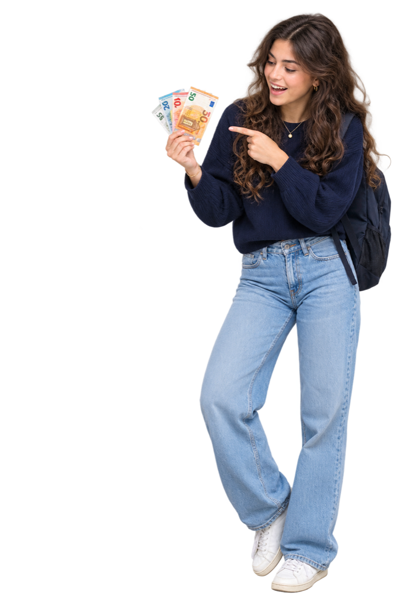

-
Curiosa
Non ci limitiamo ai seminari.
Educazione finanziaria nelle scuole superiori, ricerca sulle competenze degli studenti e un progetto pilota di microcredito a impatto.
Cosa facciamoAllontana il cursore oppure premi Esc

-
Giovane
Nata nel 2025, da under 25.
A parlare agli studenti sono altri studenti, di qualche anno più grandi. Con al fianco professionisti senior che ci fanno da bussola.
Chi siamoAllontana il cursore oppure premi Esc
-
Non profit
Ente del Terzo Settore.
Associazione di Promozione Sociale iscritta al RUNTS. Statuto, organi e documenti sono pubblici: chiunque può verificarli.
GovernanceAllontana il cursore oppure premi Esc